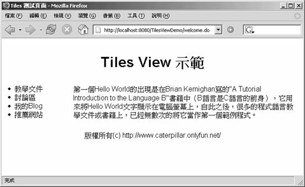

Tiles 是一個模版引擎（Template Engine），它可以讓網頁的配置（Layout）（像是使用<table>標籤）與實際要呈現資料的內容分離，Tiles提供一個版面管 理機制，您可以在Spring的View層使用Tiles來管理網頁的版面配置，這有兩個基本動作必須設定，一是設定 org.springframework.web.servlet.view.tiles.TilesView，二是設定 org.springframework.web.servlet.view.tiles.TilesConfigurer，例如：
- mvc-config.xml
<?xml version="1.0" encoding="UTF-8"?>
<!DOCTYPE beans PUBLIC "-//SPRING/DTD BEAN/EN"
"http://www.springframework.org/dtd/spring-beans.dtd">
<beans>
<bean id="viewResolver"
class="org.springframework.web.servlet.
→ view.InternalResourceViewResolver">
<property name="viewClass">
<value>
org.springframework.web.servlet.view.tiles.TilesView
</value>
</property>
</bean>
<bean id="tilesConfigurer"
class="org.springframework.web.servlet.view.
→ tiles.TilesConfigurer">
<property name="definitions">
<list>
<value>/WEB-INF/tiles-defs.xml</value>
</list>
</property>
</bean>
<bean name="/welcome.do"
class="org.springframework.web.servlet.
→ mvc.ParameterizableViewController">
<property name="viewName">
<value>welcome</value>
</property>
</bean>
</beans>注意到設定TilesView之後，您傳回的ModelAndView中設定的"view"名稱並不是指向真正的資源URL位置，而是在Tiles定義檔 中所定義的名稱，以上面的設定為例，ParameterizableViewController的"viewName"設定為"welcome"，則它 會到Tiles設定檔中找相關的"welcome"設定，Tiles定義檔的讀取位置可以由TilesConfigurer的"definitions" 屬性來設定，假設您的Tiles定義檔是這麼設定的：
- tiles-defs.xml
<?xml version="1.0" encoding="UTF-8" ?>
<!DOCTYPE tiles-definitions PUBLIC
"-//Apache Software Foundation//DTD Tiles Configuration 1.1//EN"
"http://jakarta.apache.org/struts/dtds/tiles-config_1_1.dtd">
<tiles-definitions>
<definition name=".myLayout"
path="/WEB-INF/jsp/tiles/myLayout.jsp">
<put name="title" value="Sample Page Title"/>
<put name="header" value="/WEB-INF/jsp/tiles/header.jsp"/>
<put name="menu" value="/WEB-INF/jsp/tiles/menu.jsp"/>
<put name="footer" value="/WEB-INF/jsp/tiles/footer.jsp"/>
<put name="body" value="/WEB-INF/jsp/tiles/body.jsp"/>
</definition>
<definition name="welcome" extends=".myLayout">
<put name="title" value="Tiles 測試頁面"/>
</definition>
</tiles-definitions> 在定義檔中，首先定義一個".myLayout"，名稱開頭有個逗點在命名慣例上通常表示這是一個版面定義，而不是一個真正要呈現畫面資料的定義， "welcome"定義可以繼承".myLayout"的定義，並針對該頁面的需求重新定義了"title"項目，在傳回view的名稱若為 "welcome"時，實際上會讀取的是以上的定義檔中"welcome"中的設定。
假設您的myLaout.jsp是這麼撰寫的，當中使用表格來設計版面的配置：
- myLayout.jsp
<%@page contentType="text/html"%>
<%@page pageEncoding="UTF-8"%>
<%@taglib prefix="tiles"
uri="http://jakarta.apache.org/struts/tags-tiles"%>
<html>
<head>
<meta http-equiv="Content-Type"
content="text/html; charset=UTF-8">
<title><tiles:getAsString name="title"/></title>
</head>
<body>
<table border="0" width="100%" cellspacing="5">
<tr>
<td colspan="2">
<tiles:insert attribute="header"/>
</td>
</tr>
<tr>
<td width="140" valign="top">
<tiles:insert attribute="menu"/>
</td>
<td valign="top" align="left">
<tiles:insert attribute="body"/>
</td>
</tr>
<tr>
<td colspan="2">
<tiles:insert attribute="footer"/>
</td>
</tr>
</table>
</body>
</html> header、menu、body、footer等JSP頁面簡單的如下撰寫：
- header.jsp
<%@page pageEncoding="UTF-8"%>
<center><h1>Tiles View 示範<h1> </center>
TilesViewDemo menu.jsp
<%@page pageEncoding="UTF-8"%>
<li>教學文件</li>
<li>討論區</li>
<li>我的Blog</li>
<li>推薦網站</li>- body.jsp
<%@page pageEncoding="UTF-8"%>
第一個Hello World的出現是在Brian Kernighan寫的"A Tutorial Introduction to
the Language B"書籍中（B語言是C語言的前身），它用來將Hello World文字顯示在電腦
螢幕上，自此之後，很多的程式語言教學文件或書籍上，已經無數次的將它當作第一個範例程式。- footer.jsp
<%@page pageEncoding="UTF-8"%><br>
<center>版權所有(c)https://openhome.cc/</center>要使用Tiles的話，您必須要有commons-beanutils.jar、commons-logging.jar、commons- collections.jar、commons-digester.jar、struts.jar四個.jar檔案，這些.jar檔案都可以在 Spring下載檔案中lib目錄的jakarta-commons目錄及struts目錄下找到。
按照以上的設定，如果您連接到/welcome.do，則會取得Tiles定義檔中的welcome的定義，結果是顯示以下的內容：

如果您有一些資料是在每一個頁面（例如在Header處）都要出現的，您可以在header.jsp中這麼撰寫：
<%@page pageEncoding="UTF-8"%>
<center><h1>Tiles View 示範<h1> </center>
<H1>\${someData}</H1>
<center><h1>Tiles View 示範<h1> </center>
<H1>\${someData}</H1>
為了要能顯示\${someData}資料，則您必須在每一個Controller中設定屬性值，例如：
...
Map model = new HashMap();
...
model.put("someData", data);
...
Map model = new HashMap();
...
model.put("someData", data);
...
接著在ModelAndView傳回時，設定model物件，每一個Controller中都必須加入這些描述，才會在每一個有Tiles設定的頁面都能顯示\${someData}。
不過還有個更簡單的方法，您可以繼承 org.springframework.web.servlet.view.tiles.ComponentControllerSupport這個類 別，它繼承自Tiles的ControllerSupport類別，您可以重新定義ComponentControllerSupport的 doPerform()方法，例如：
...
public class HeaderControllerSupport
extends ComponentControllerSupport {
protected void doPerform(
ComponentContext componentContext,
HttpServletRequest request,
HttpServletResponse response)
throws Exception {
ApplicationContext context = getApplicationContext();
SomeData someData =
(SomeData) context.getBean("someData");
componentContext.putAttribute("someData", someData);
}
}
public class HeaderControllerSupport
extends ComponentControllerSupport {
protected void doPerform(
ComponentContext componentContext,
HttpServletRequest request,
HttpServletResponse response)
throws Exception {
ApplicationContext context = getApplicationContext();
SomeData someData =
(SomeData) context.getBean("someData");
componentContext.putAttribute("someData", someData);
}
}
在您的Tiles定義檔中可以這麼設定，就可以每一個頁面都取得someData的值了：
<?xml version="1.0" encoding="UTF-8" ?>
<!DOCTYPE tiles-definitions PUBLIC
"-//Apache Software Foundation//DTD Tiles Configuration 1.1//EN"
"http://jakarta.apache.org/struts/dtds/tiles-config_1_1.dtd">
<tiles-definitions>
<definition name=".header"
path="/WEB-INF/jsp/tiles/header.jsp"
controllerClass="onlyfun.caterpillar.
→ HeaderControllerSupport"/>
<definition name=".myLayout"
path="/WEB-INF/jsp/tiles/myLayout.jsp">
<put name="title" value="Sample Page Title"/>
<put name="header" value=".header"/>
<put name="menu" value="/WEB-INF/jsp/tiles/menu.jsp"/>
<put name="footer" value="/WEB-INF/jsp/tiles/footer.jsp"/>
<put name="body" value="/WEB-INF/jsp/tiles/body.jsp" />
</definition>
<definition name="welcome" extends=".myLayout">
<put name="title" value="Tiles 測試頁面"/>
</definition>
</tiles-definitions>
<!DOCTYPE tiles-definitions PUBLIC
"-//Apache Software Foundation//DTD Tiles Configuration 1.1//EN"
"http://jakarta.apache.org/struts/dtds/tiles-config_1_1.dtd">
<tiles-definitions>
<definition name=".header"
path="/WEB-INF/jsp/tiles/header.jsp"
controllerClass="onlyfun.caterpillar.
→ HeaderControllerSupport"/>
<definition name=".myLayout"
path="/WEB-INF/jsp/tiles/myLayout.jsp">
<put name="title" value="Sample Page Title"/>
<put name="header" value=".header"/>
<put name="menu" value="/WEB-INF/jsp/tiles/menu.jsp"/>
<put name="footer" value="/WEB-INF/jsp/tiles/footer.jsp"/>
<put name="body" value="/WEB-INF/jsp/tiles/body.jsp" />
</definition>
<definition name="welcome" extends=".myLayout">
<put name="title" value="Tiles 測試頁面"/>
</definition>
</tiles-definitions>